|
|
Building an AI-powered routing chatbot
Part 1 of 4 |
|
|
|
Building an AI-powered routing chatbot
Part 1 of 4 |
|
Chatbots are becoming popular as a new way for companies to improve customer service and engage new customers.
But what is a chatbot? It’s a computer program running on the other side of an instant messaging channel, receiving your input and selecting the best response or the best action to do. And that’s great, but is also a quite generic definition. A chatbot can be anything. It can engage in a conversation (entertaining, coaching, self-help…), give some information (tell the weather, the news, a medical diagnosis, a FAQ), or do some specific task (schedule a meeting, play music, book a table, buy tickets). It can use AI at several levels or no AI at all. Used for customer service, it can be as simple as an IVR system, guiding the conversation with sets of multiple choices, or a more complex program that tries to understand user sentences using natural-language processing (NLP) and take an action determined by other AI algorithms.
Yes, you’ve already guessed: this post is not about bots in general. It’s about a bot specialized in choosing humans by using machine learning services and algorithms.
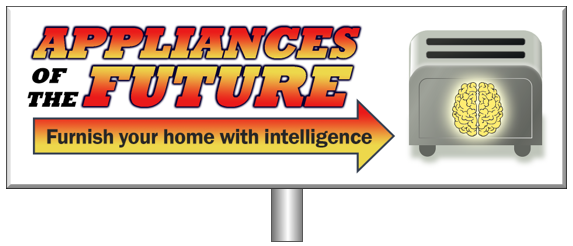
As motivation let’s imagine that, in the future, we have this fictional appliance store that sells all kinds of Internet-of-Things, intelligent appliances, like talking blenders, learning food processors and conscious toasters. Our store has a sales department and a support department, and it uses Facebook to interact with the customers.
Our goal is to have a Facebook Messenger (FB) chatbot available 24/7 as 1st line assistance, and 6 human agents in the 2nd line. The bot should be bilingual and intelligent enough to handle the first part of the conversation: identify the customer and receive the question. Finally, by analyzing the question, it must predict the best human agent to handle the interaction and redirect the conversation.
In the end, from the customer point of view, we want something like this:
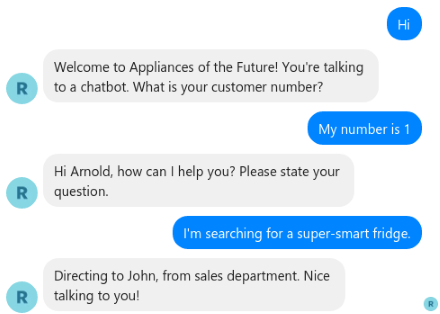
In a series of 4 posts we’ll present an example of a bot capable of doing this, in Python, while highlighting relevant parts of the code. If you’re interested, you can get the full code from GitHub.
The full example will show a way to create a FB chatbot, detect the language, the sentiment and the intent of the user input, and finally select the most capable and available human agent to handle the customer question, according to all the information detected, the skills of the agent, the customer profile and the history of interactions between the customer and the contact center.
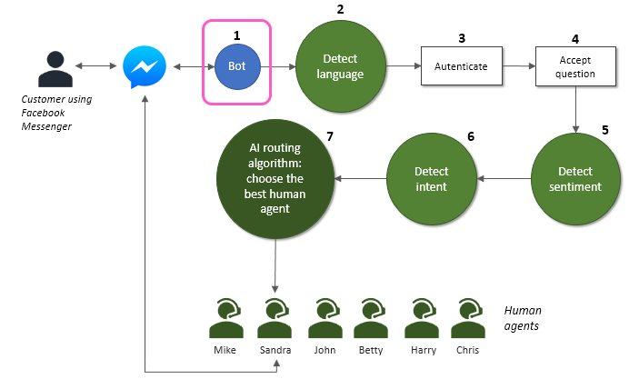
In step 1, we’ll create a bot available in FB Messenger. In steps 2, 3 and 4 we'll detect the language using a machine learning cloud service and we'll define the conversation flow. In steps 5 and 6 we’ll use more machine learning cloud services to identify the sentiment and the intent of the user input. In step 7 we’ll build and train a deep artificial neural network to select the best human agent.
All agents and customers are fictional and there will be no real transfer of the conversation after step 7. The goal is to show a way to use machine learning to select agents, not only using cloud cognitive services but also building a custom model.
This post will cover the first step of the diagram, showing how to create a very simple but operational FB chatbot. Let's start!
For this step we’ve used this informative Twilio post as a starting point, making some modifications to use the new Facebook Graph API 3.0.
The Python version used was 3.6.5. You can download it here.
We’ll start by creating an endpoint: the URL that will be used by Facebook to send us the user messages and get our responses to show to the user. For that we’ll use Flask, a lightweight web framework.
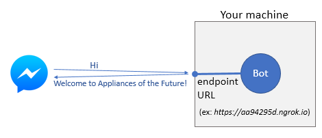
To make a first test, save the following code in a file named test.py, open a command prompt and run it (> python test.py). These lines will create an endpoint on port 5001 prepared to handle Facebook messages.
from flask import Flask, request # Installation: pip3 install Flask==1.0
import requests # Installation: pip3 install requests==2.18.4
from pprint import pprint
# app will be used to create a light web server that will receive the user input
# (from a FB Messenger client) and respond
app = Flask(__name__)
# The page access token must be generated in Facebook for Developers.
# This token is required to access Facebook APIs.
ACCESS_TOKEN = 'Your access token'
# This other token is used to verify if any message that reaches the bot
# is an authentic request sent by Facebook. This will protect the bot from
# unauthorized access. You must specify the token in Facebook for Developers,
# when you define the webhook for this bot.
VERIFY_TOKEN = 'AIRoutingBotToken'
@app.route('/', methods=['GET', 'POST'])
def handle_user_input():
try:
if request.method == 'GET':
# Before allowing people to message your bot, Facebook has implemented a verify token
# that confirms all requests that your bot receives came from Facebook.
token_sent = request.args.get("hub.verify_token")
return verify_fb_token(token_sent)
else:
# Get whatever message a user sent the bot
output = request.get_json()
pprint(output)
for event in output['entry']:
messaging = event['messaging']
for message in messaging:
if message.get('message'):
text = message['message'].get('text')
# Facebook Messenger ID from user so we know where to send response back to
recipient_id = message['sender']['id']
if text:
print("Received '{0}' from {1}".format(text, recipient_id))
# Return this message to the user
response = "Welcome to Appliances of the Future!"
print("My response: '{}'".format(response))
send_message(recipient_id, response, True)
except Exception as e:
print("Error handling user input: {}".format(e))
return "My response"
def verify_fb_token(token_sent):
""" Take token sent by facebook and verify it matches the verify token you sent
if they match, allow the request, else return an error
"""
if token_sent == VERIFY_TOKEN:
return request.args.get("hub.challenge")
return 'Invalid verification token'
def send_message(recipient_id, message, verbose=False):
'''Send text message to the specified recipient.
https://developers.facebook.com/docs/messenger-platform/send-api-reference/text-message
Input:
recipient_id: recipient id to send to
message: message to send
Output:
Response from API as
'''
params = {
"access_token": ACCESS_TOKEN
}
payload = {
'messaging_type': 'RESPONSE',
'recipient': {
'id': recipient_id
},
'message': {
'text': message
}
}
response = requests.post("https://graph.facebook.com/v3.0/me/messages", params=params, json=payload)
result = response.json()
if verbose:
print("send_message result:")
pprint(result)
return result
if __name__ == '__main__':
app.run(port=5001, debug=True)
When the code is executed, we can see it running on http://127.0.0.1:5001/ (our machine, port 5001):
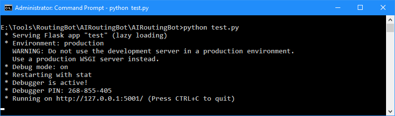
This means we now have a bot waiting for messages on port 5001, but it is trapped in the dark: it is not reachable outside our machine. We must dig a tunnel. An easy way to do it, at least in testing phase, is by using ngrok (in production phase you may want to host your code somewhere in the cloud to be available 24/7). After installing ngrok, open a Command Prompt window and type > ngrok http 5001. This will expose our local web server, listening on port 5001, to the Internet, through a public URL created by ngrok.
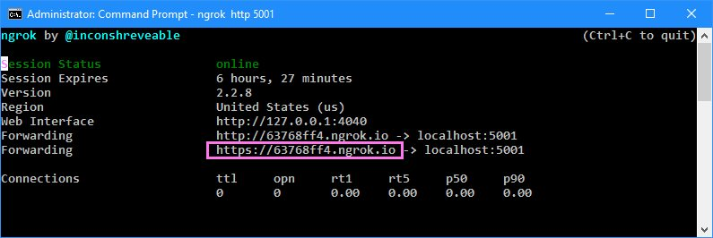
Ok, now the bot can communicate with the outside world, but it has no one to talk to yet. We must connect it to Facebook.
1. Create a Facebook page
2. Go to Facebook for Developers, create a developer account and a new app.
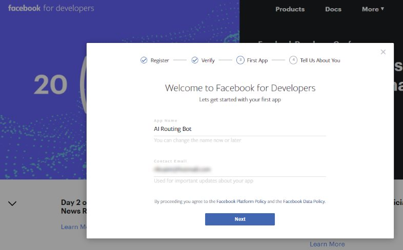
3. Click “Set Up” on the Messenger section
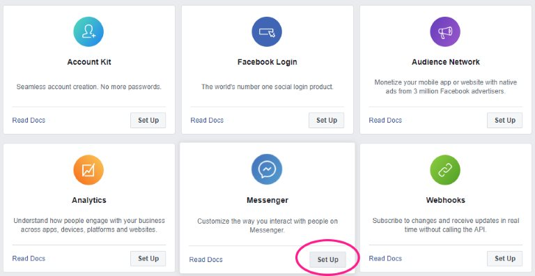
4. In the Settings tab, fill in the required basic settings.
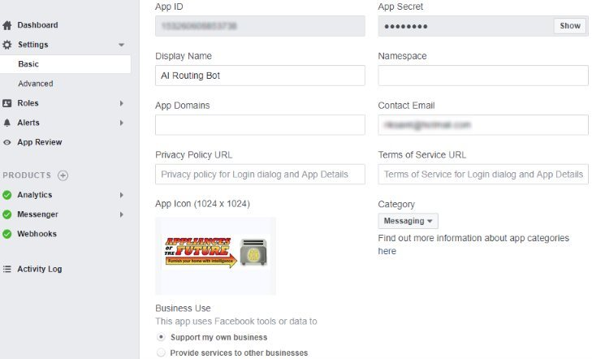
5. Assure that your bot is running in your machine and ngrok is tunneling to a valid URL. In the Webhooks tab, subscribe “messages”, click “Edit Subscription”, fill in the “Callback URL” with your ngrok URL, and set the Verify Token as "AIRoutingBotToken" (you can set a different name as long as it matches the VERIFY_TOKEN in your code).
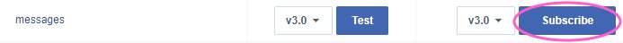
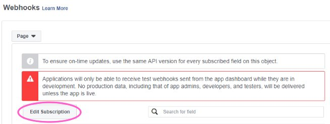
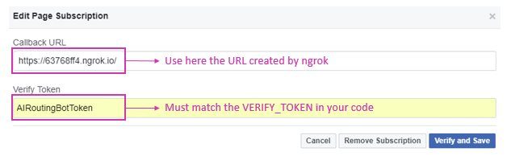
6. When you click “Verify and Save” Facebook will test the connection to your bot. If the test passes, FB accepts your configuration and you should see a GET request reaching ngrok and your bot.
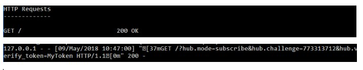
7. Now subscribe the app to your FB business page. If don’t have one, create one. This will be the page used for the customers to communicate with your bot. When you do it, FB will give you an Access Token. Copy and assign it to the ACCESS_TOKEN variable in your code.
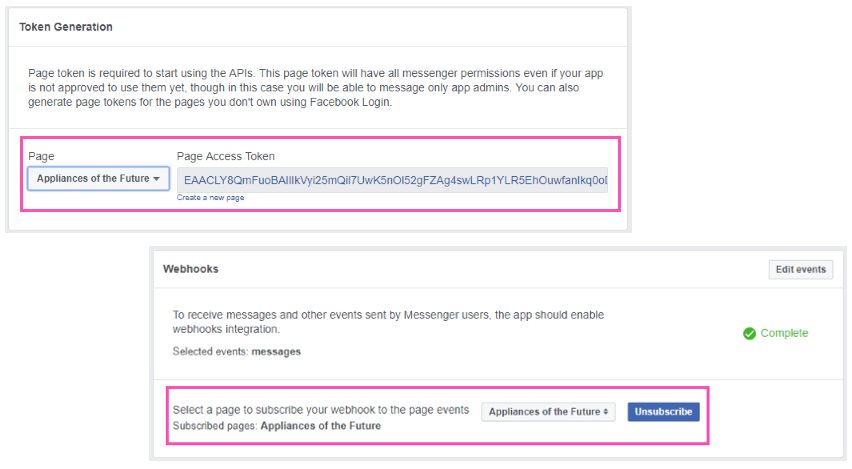
8. Go to Roles tab and add a tester.
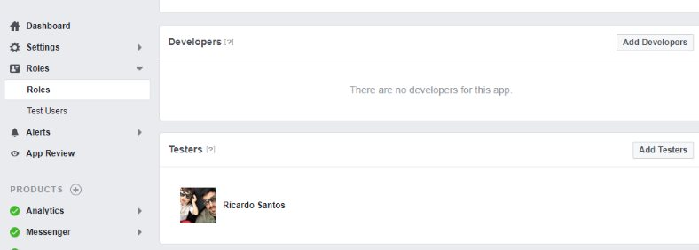
9. Make your test user start a conversation with the bot. If everything is ok, you’ll receive a response.
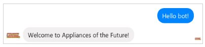
Awesome! We have the bot chatting with us. It does nothing more than replying with the same message, but we now have the foundations to start building the routing functionality.
In the next post we’ll enhance the bot to identify the customer, ask for the his/her question and use cognitive cloud services to detect the language and the sentiment.
Until then, happy coding!
Next: identifying the customer, the language and the sentiment using Microsoft Text Analytics services